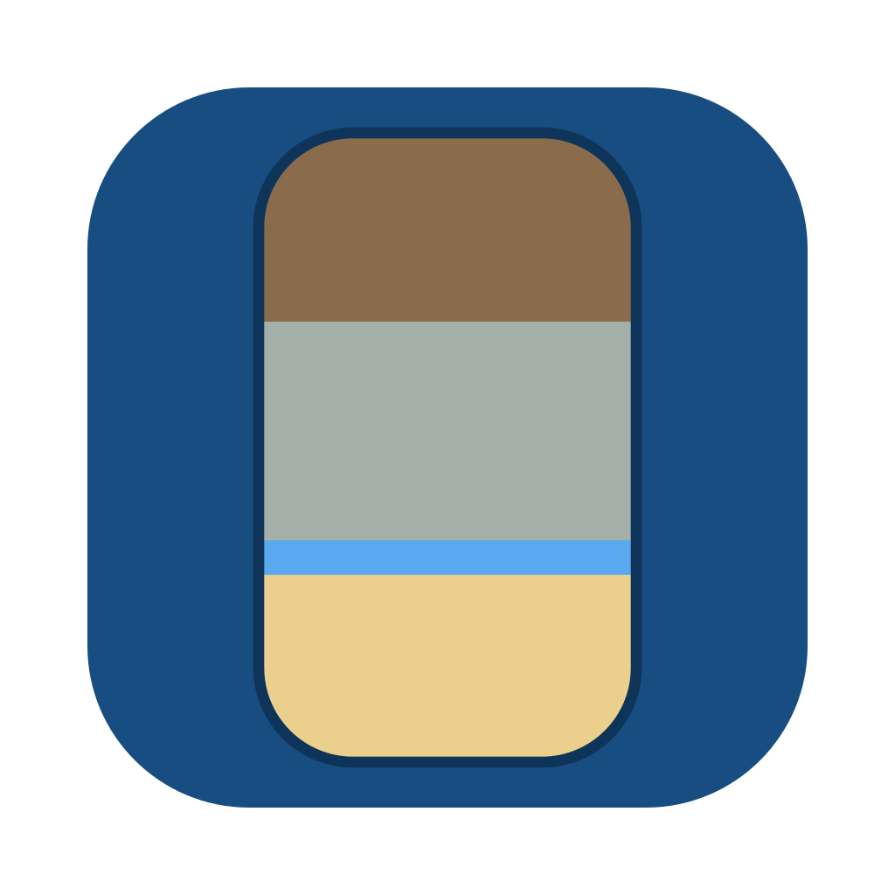
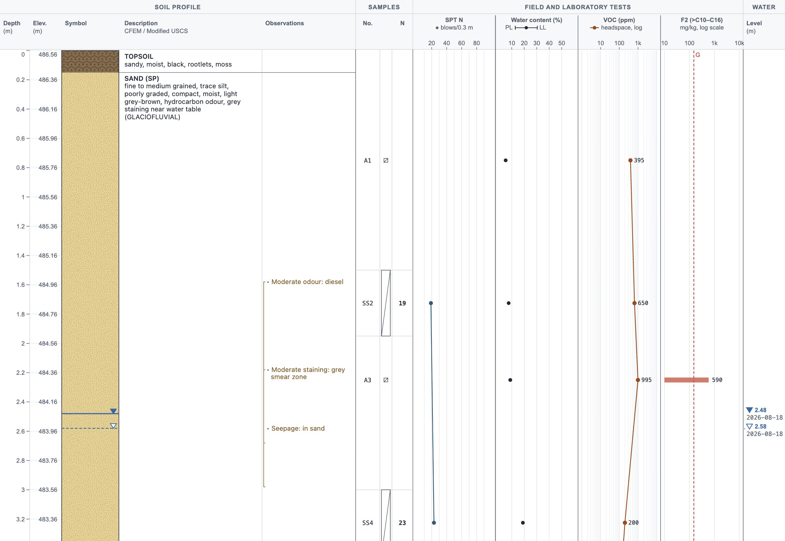

Borehole Field LogA desktop app that turns what you see at the hole into CFEM and Modified USCS logs, PDFs, Excel and AGS 4 files, for geotechnical and environmental work in Alberta and Saskatchewan. Mac and Windows; it works offline.

First the hole is drilled.
Then each layer is described.
Then samples and readings go in.
Then it is checked and issued.
Points with full classification and lab results, mapped by inverse distance or kriging. The map says how it was made and how far to trust it; texture, particle size and salinity graphs sit beneath.
Soil, modifiers, plasticity, compactness, moisture, colour, other features and origin, in the order you write them. The samples taken in the layer, with their VOC and LEL, are right underneath.
A layer too thin for its words keeps its whole description, below it on a leader, with its thickness written after its name. Nothing is cut off with an ellipsis.
Odour, staining, seepage or cobbles, at the depth they were seen or over a range, drawn there on the log and added straight from it.
Show samples as standard symbols, small pictures (split spoon, Shelby tube, jar, bag, trowel, auger) or their type codes, on the screen, the PDF and the key.
Type latitude and longitude, degrees-minutes-seconds, UTM or a legal land description with the elevation; it reads them back before placing, and flags a point that is in another zone or far from the site.
Save one borehole as a file and import it into another project. Export all data to Excel or AGS 4 for other logging software, with every detail carried across.
When a new version is out, the app says so and brings you here. Nothing installs itself, and the check sends nothing about you or your projects.
Pick your computer and download the installer. Install it like any app; your boreholes and settings stay on your computer, and earlier versions update in place.
—Signed and notarized by Apple, so it opens without warnings. How to install on Windows
Loading…
Yes, and it is expected: the Windows installer isn’t code-signed yet, so Windows and your browser warn about it, and each new version warns again.
Open the downloaded .dmg and drag Borehole Field Log to Applications, then open it from there. It is signed and notarized by Apple, so it opens without warnings. It needs a Mac with Apple silicon (M1 or newer).
Compare its SHA-256 with the one shown with the download. On a Mac, in Terminal:
shasum -a 256 ~/Downloads/Borehole-Field-Log-*.dmgOn Windows, in PowerShell:
Get-FileHash .\Borehole-Field-Log-Setup-*.exeOnce a day when it starts, the app asks GitHub whether a newer version is out. If there is one, it shows what is new; Download brings you here, and you install it the same way. You can turn the daily check off under Help › Check for updates.
Yes. Logging, PDFs, Excel and AGS exports, groundwater and soil survey maps all work offline. Only map backgrounds and the update check use the internet.
Nowhere: there is no account, no tracking and no analytics, and your boreholes stay on your computer and in the files you save. Map requests carry only the area in view. Read the privacy policy and terms of use.
Macs with Apple silicon (M1 or newer), and Windows 10 or 11, 64-bit.